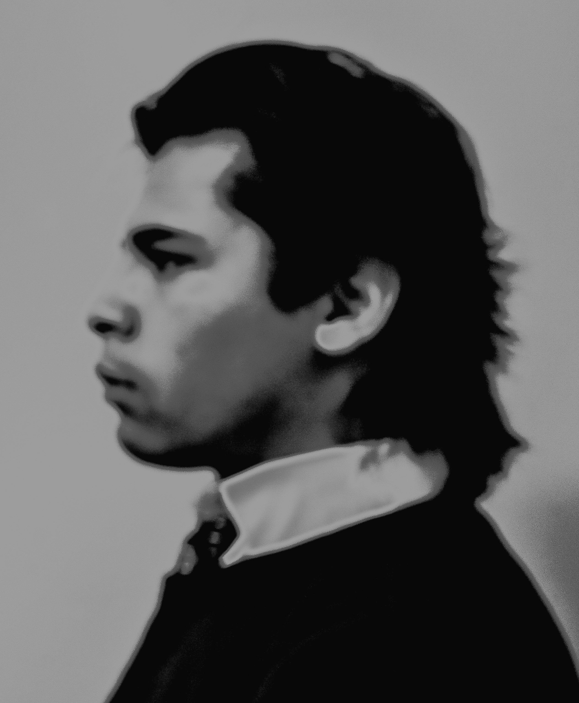

About me
Hello my name is Oscar charo,i,ve always had a enjoyed coding specialy in high school when i first started learning. After high school i stop coding regularly and and only did it every once in a while. Its very fun and challenging doing code again after such a long time.
I recently started learning to code again, which is one of the skills that i want to learn and master to some degree, along with other passions i have. Other passions that i have is learning new languages. at the moment im fluent in spanish and english, which is a good thing since i work as a spanish interpreter. My next language that i want to learn, that i also have studied before is french.After french i want to move on to learn Italian,German,japannese and russian.
My passions also include photography, digital and film one of the things i enjoy most about photography is developing and editing wheather is in a darkroom or on the computer.I also love playing sports in particular soccer is my favorite sport. I also really enjoy tennis,track and skateboarding.